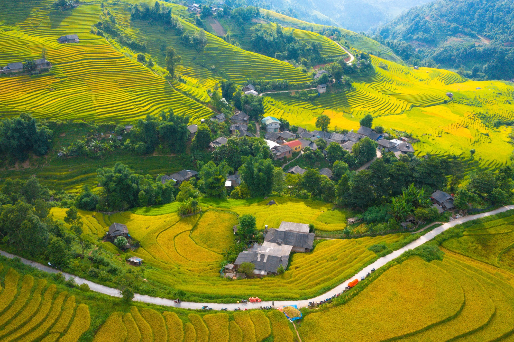

Ruộng bậc thang Sa Pa chín sớm làm 'say lòng' lữ khách
Thứ năm, 04/08/2023, 15:10 (GMT+7)
Đầu tháng 8, nắng vàng hanh hao đổ về khắp những sườn núi Sa Pa, gọi mùa lúa xanh chín dần trên khắp bản làng, đẹp tựa tuyệt tác của vị họa sĩ tài ba. Không giống với những vùng đất khác ở Tây Bắc, Sa Pa chỉ có một vụ lúa duy nhất trong năm và mùa gặt sẽ bắt đầu từ giữa tháng 8 đến hết tháng 9. Mùa lúa chín ở Sa Pa cũng rải rác theo địa điểm và thời tiết hàng năm. Năm nay, những thửa ruộng ở Nậm Cang, cách trung tâm thị xã khoảng 50 km chín sớm, dệt nên những tấm thảm vàng óng khắp thung lũng. Ngắm nhìn khung cảnh núi non hùng vĩ, không ít người liên tưởng đến “một dãy Alps” trong lòng Sa Pa. Song, lại thân thương và đậm chất Tây Bắc bởi những thửa ruộng bậc thang ôm theo sườn núi. Từng lớp, từng lớp ruộng bậc thang với sắc xanh mướt xen lẫn chín vàng, kéo nhau chạy tít tắp tới chân trời, bao bọc xung quanh là những dãy núi hùng vĩ cùng bầu trời cao xanh tạo nên bức tranh khoáng đạt và thi vị.
Ruộng bậc thang ở Sa Pa đã được hình thành nhờ quá trình canh tác của đồng bào dân tộc thiểu số địa phương từ hàng trăm năm trước. Do địa thế không bằng phẳng, họ vạt những sườn núi thành bậc thang, rồi dẫn nước từ núi cao về trồng lúa. Vì vậy những thửa ruộng nơi đây là kết hợp hài hòa giữa vẻ đẹp của tạo hóa và sự khéo léo, cần mẫn của biết bao thế hệ người dân địa phương. Vẻ đẹp đó là lý do tờ báo Ấn Độ India Times ca ngợi ruộng bậc thang ở Sa Pa là khung cảnh ngoạn mục và mang tính biểu tượng của du lịch vùng cao Tây Bắc, được định vị trên bản đồ du lịch thế giới. Còn tờ Channel News Asia gợi ý Sa Pa là một trong 10 điểm đến tránh nóng lý tưởng ở châu Á, không chỉ bởi thời tiết mát lạnh mà còn vì những bản làng yên bình, ruộng bậc thang tuyệt mỹ cùng những câu chuyện văn hóa ẩn chứa. Dạo bộ trên những con đường quanh co khắp bản làng, hít căng lồng ngực không khí trong trẻo và thu vào tầm mắt ngút ngàn ruộng bậc thang, nương ngô và khói lam chiều, mọi muộn phiền như biến tan, chỉ còn lại sự bình yên trong tâm trí. Nếu không kịp đón mùa lúa vàng ở Nậm Cang, du khách đừng vội lo lắng vì ruộng bậc thang ở thung lũng Mường Hoa, bản Tả Phìn, Tả Van tại trung tâm thị xã vẫn còn khoác trên mình màu áo xanh rì, tươi mới. Lúa phủ khắp sườn đồi rồi tràn xuống thung lũng, ôm lấy những bản làng và dòng suối thơ mộng... Cả không gian xanh mướt một màu, thơm mùi lúa mới, tạo nên khung cảnh căng tràn sức sống, báo hiệu mùa màng bội thu.
Giới thiệu
Tell Ur Mom II - Winno ft. Heily「Cukak Remix」/ Audio Lyrics Video
Follow Me

Liên hệ
Điện thoại: 0987654321
Email: web1013@dinhnt.com